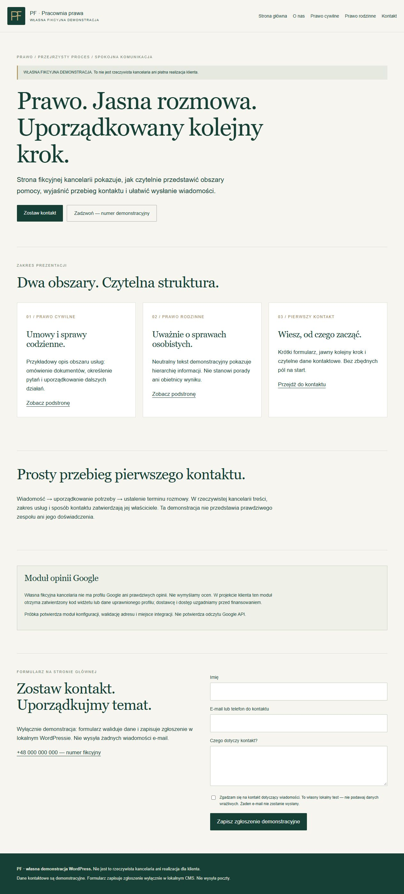

5 stron + formularz + autorski monogram
PF / strona usługowa
Odrębna fikcyjna witryna kancelarii: strona główna, o nas, dwa obszary usług i kontakt. Dodatkowa techniczna strona potwierdza poprawny zapis formularza.
Zobacz wdrożenie i źródła →